地政学
オーランドはフロリダ中央部の内陸にあり、州内の沿岸都市、カリブ海、ラテンアメリカ、米国内観光市場を空港で結ぶ。首都でも港町でもないが、観光資本と人口移動を通じて州政治と国際イメージに影響する都市だ。

🇺🇸 アメリカ合衆国 / フロリダ州 / World City Atlas
テーマパーク、観光労働、郊外成長、空港、ラテン系移住、湿地と気候、住宅格差、エンタメ産業が重なるフロリダ内陸の観光都市。
都市の骨格
オーランドは世界的な余暇の舞台であると同時に、サービス労働、移住、空港、医療、郊外住宅、湖沼と湿地の管理に支えられた日常都市である。
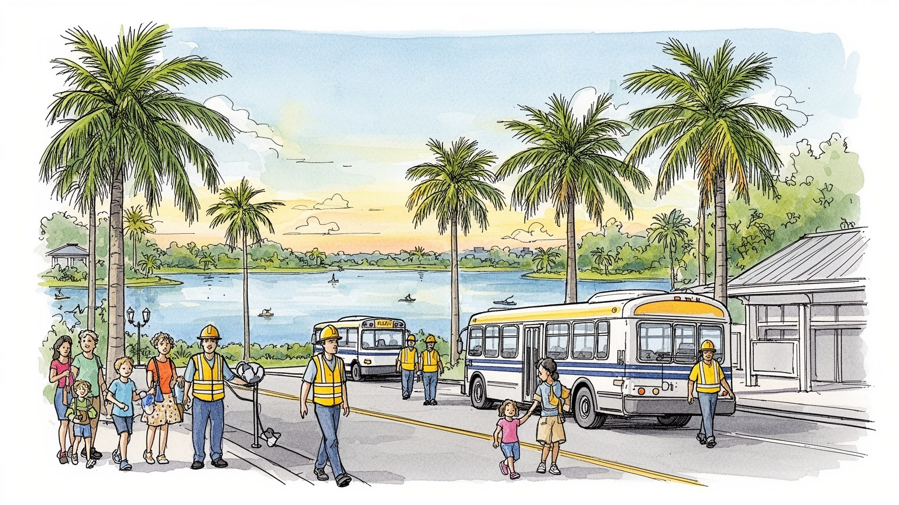
オーランドはフロリダ中央部の内陸にあり、州内の沿岸都市、カリブ海、ラテンアメリカ、米国内観光市場を空港で結ぶ。首都でも港町でもないが、観光資本と人口移動を通じて州政治と国際イメージに影響する都市だ。
テーマパーク、ホテル、会議、空港、医療、大学、住宅建設、飲食、物流が雇用を作る。表舞台の演出と、清掃、警備、調理、送迎、介護、倉庫、保育の仕事が近接し、賃金と家賃の差が暮らしを左右する街でもある。
英語とスペイン語、カリブ系、プエルトリコ系、ブラジル系、黒人教会、福音派、カトリック、若い学生文化が混じる。観光地の均質な景観の奥に、移住者の祭礼、音楽、家族の信仰が日常を作っている。今も息づく。
旅行者はテーマパーク、湖、商業施設、湿地を巡るが、住民には長い車通勤、住宅費、低賃金、夏の暑さ、雷雨、ハリケーン後の保険、学校、医療が日常の課題になる。観光の光と生活の重さが近い切実な都市である。
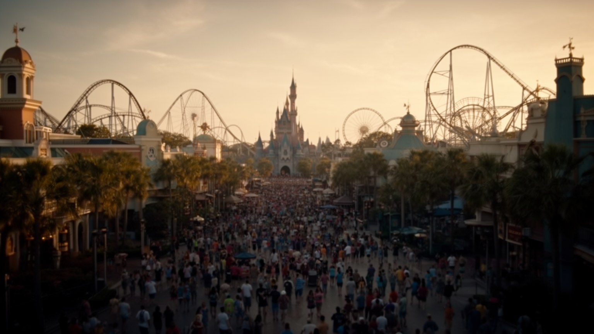
オーランドの世界的な知名度は、テーマパーク群によって作られている。ウォルト・ディズニー・ワールド、ユニバーサル、シーワールド、周辺のホテル、アウトレット、レストラン、道路、送迎バス、会議施設が、都市圏の南西部に巨大な余暇の地図を描く。ここでは物語、建築、音楽、照明、待ち列、アプリ、清掃、警備、食品、駐車場、救急対応までが一つの体験として設計され、家族旅行や国際観光の記憶を作る。だがこの経済は魔法だけで動くのではない。低賃金の接客、着ぐるみや舞台裏の技能、ホテル清掃、厨房、交通整理、保守、植栽、倉庫、夜間の整備が、毎日膨大な訪問者を受け止める。天候、景気、燃料価格、為替、学校休暇、感染症、航空便の変化は、入場者数と雇用にすぐ響く。テーマパークは市の中心部から離れた私有地の中に大きな自治的空間を作り、周辺自治体、州税制、道路投資、土地利用をめぐる政治にも関わる。オーランドを見るには、夢を売る施設の完成度と、その夢を支える労働、土地、公共サービスを同時に読む必要がある。園内の秩序は都市の外側の不安定なシフト勤務とつながっており、楽しさと生活の現実は同じ経済の表裏である。さらに周辺の小規模ホテルや飲食店も大企業の集客に依存し、地域の税収と雇用は一つの巨大な休暇市場の波に合わせて上下する。地域も揺れる。
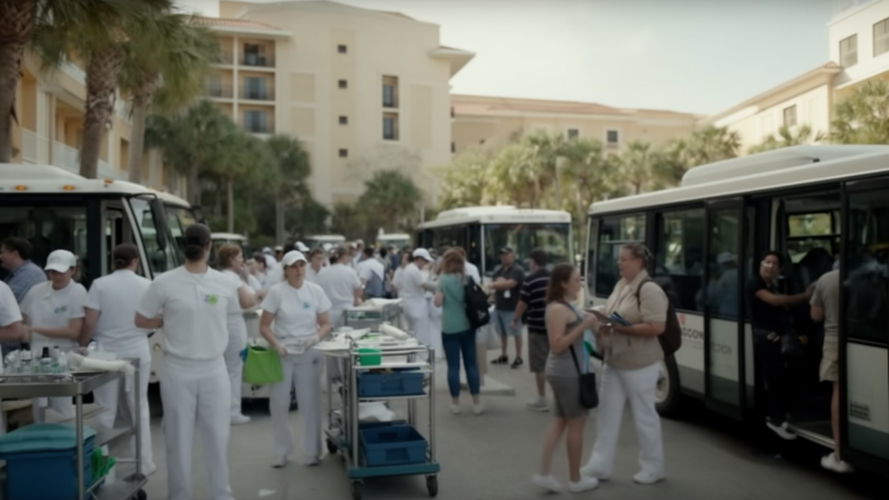
オーランドの観光産業は、来訪者が滞在中に不便を感じないよう、細かい仕事を何層にも積み上げている。空港での案内、レンタカー、ホテルのフロント、客室清掃、レストランの調理、食材配送、園内の誘導、深夜の洗濯、警備、救急、通訳、会議運営、土産物販売、ライドの点検が、休日の軽さを作る。多くの仕事は季節や予約数に左右され、繁忙期には長時間、閑散期には収入減という揺れが出る。観光客が払う高い宿泊費やチケット代が、現場の賃金や住宅の安定へ十分に届くとは限らない。車がなければ通勤しにくい職場も多く、早朝や深夜のシフトは保育、学校、家族の介護とぶつかりやすい。移民や若者、学生、シングルペアレントにとって、観光業は入口の仕事であると同時に、賃金上昇や昇進の限界を感じやすい場でもある。労働組合、最低賃金、チップ文化、医療保険、交通支援は、都市の公平さを測る具体的な論点になる。笑顔の接客が都市の顔であるほど、その笑顔を支える休憩時間、通勤費、病欠、住まいを見落としてはならない。オーランドの豊かさは、訪問者数ではなく、働く人が生活を組み立てられるかにも表れる。観光の現場は家族旅行の記憶を作る場所であると同時に、労働条件をめぐる交渉が毎日続く職場でもある。学校休暇や大型会議の週には、保育や交通の負担も急に重くなる。
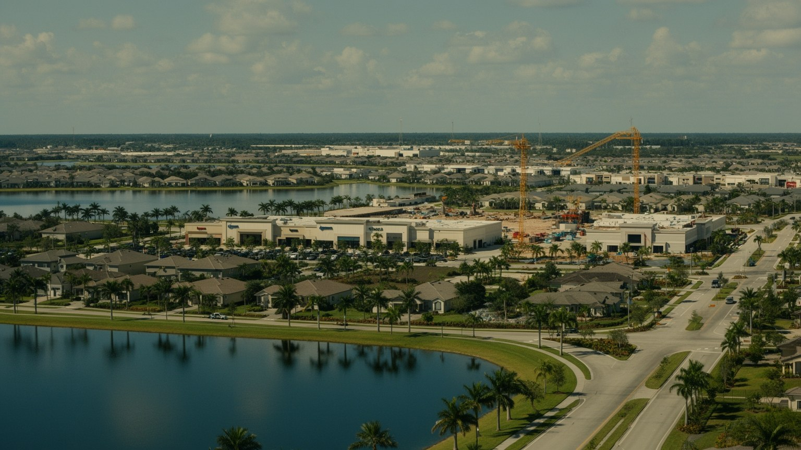
オーランド都市圏は、中心市街地だけでなく、キシミー、レイクブエナビスタ、ウィンターパーク、メイトランド、アポプカ、サンフォード、レイクノナなどへ広く伸びる郊外の集合体である。湖、湿地、柑橘畑、牧草地だった土地は、分譲住宅、 gated community、ショッピングセンター、学校、医療施設、高速道路へ変わってきた。人口増加は住宅と雇用を生むが、車依存、渋滞、長い通勤、公共交通の弱さ、緑地の消失、雨水管理の負担も増やす。観光地の近くに住むことは便利に見えても、実際には職場、学校、買い物、病院が車でしか結ばれない場合が多い。郊外住宅は家族に広さと安全感を与える一方、家賃や保険料、管理費、ガソリン代が家計を圧迫する。新しい開発地では保育、図書館、公園、歩道、バス路線が後から追いつくことも多く、都市の成長速度と公共サービスの整備にずれが生じる。オーランドの郊外を見る時、プール付き住宅や明るい芝生だけでなく、湿地を埋める排水路、広い駐車場、学校までの距離、夜勤後の運転も読む必要がある。低密度の快適さは、移動時間と環境負荷を伴う。成長する都市圏が持続するには、住宅供給だけでなく、歩ける近隣、公共交通、洪水に強い土地利用を同時に作ることが欠かせない。外縁の開発が速いほど、古い近隣の再投資や中心部の空洞化にも目を配る必要がある。
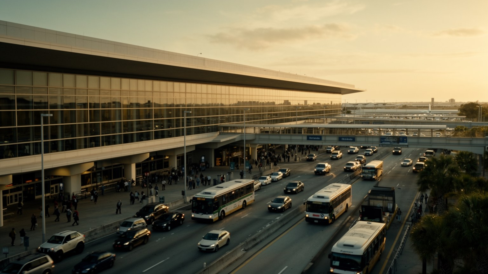
オーランド国際空港は、都市の玄関であるだけでなく、観光経済の心臓部である。国内各地、カナダ、ラテンアメリカ、欧州からの便が、家族旅行、クルーズ前後の滞在、会議、学生、移住者を運び、ターミナルからレンタカー、シャトル、タクシー、ライドシェア、ホテルバスへ人の流れを広げる。空港の近くには物流、整備、ホテル、倉庫、飲食、警備、清掃の仕事が集まり、早朝と深夜の移動を必要とする労働者も多い。都市圏の移動は自動車に大きく依存し、州間高速道路、幹線道路、有料道路、巨大駐車場が、観光地と郊外住宅を結ぶ。近年は都市間鉄道や地域交通の改善も進むが、日常の通勤ではバスの本数、歩道の連続性、停留所の暑さ、乗換の難しさが問題になる。観光客にはレンタカーが自由を与える一方、住民には渋滞、事故、保険料、ガソリン代、運転できない人の孤立を生む。空港が大きい都市ほど国際性は高まるが、航空需要は燃料価格、気候政策、災害時の運航停止にも弱い。オーランドを読むには、華やかな到着ロビーだけでなく、深夜に帰る清掃員、空港外の倉庫、猛暑のバス停、テーマパークへ向かう車列を見る必要がある。移動の便利さが誰に届くかが、観光都市の実際の住みやすさを決める。鉄道やバスが車を持たない人にも届けば、観光と日常の距離はもう少し縮まる。移動格差も減る。
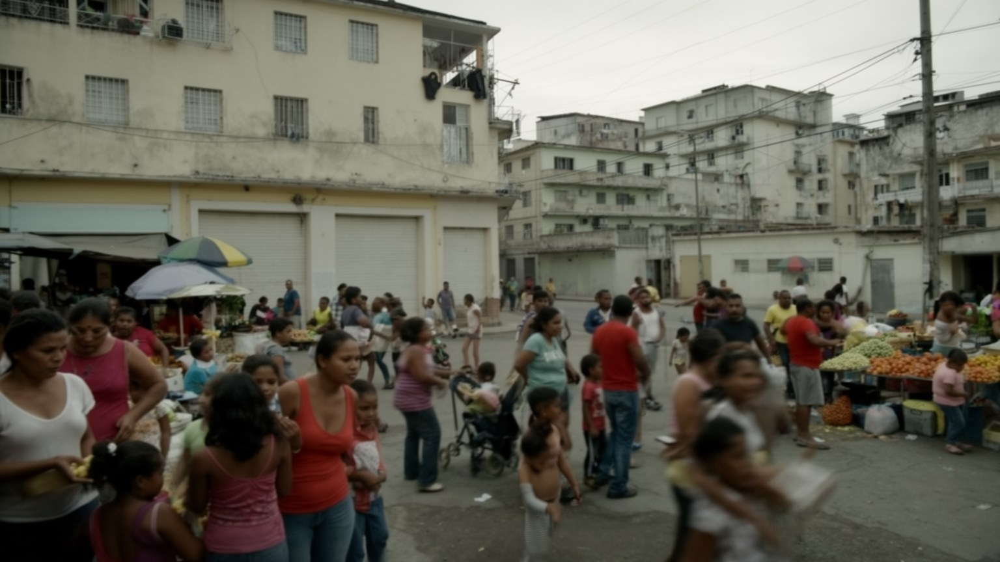
オーランドは、プエルトリコ系、キューバ系、ドミニカ系、コロンビア系、ベネズエラ系、ブラジル系など、多様なラテンアメリカ出身者とその家族が存在感を増してきた都市である。スペイン語とポルトガル語の店、教会、ラジオ、食堂、法律事務所、美容室、送金サービス、学校の通訳が、観光地の均質なイメージとは違う生活の地図を作る。とくにプエルトリコとの結びつきは強く、島からの移住やハリケーン後の移動は、家族、政治参加、学校、住宅需要を変えてきた。ラテン系住民はホテル、飲食、建設、医療補助、空港、教育、起業、専門職まで幅広く働き、オーランドの成長を日々支える。だが言語、資格認定、在留資格、差別、家賃、医療保険、交通の問題は、移住後の安定を左右する。第二世代の若者は、家庭の文化と米国南部の学校生活、観光都市のアルバイト、大学進学の間で自分の居場所を作る。祭りや音楽、宗教行事は文化の可視性を高めるが、移住者の生活は祝祭だけではない。家族を呼び寄せ、仕事を探し、学校の面談に行き、送金し、災害時に親族の安否を確認する毎日の積み重ねが都市を変えている。オーランドのラテン化は一時的な人口変化ではなく、政治、商業、信仰、食、言語を通じて都市の性格を組み替える大きな力である。投票所、学校、教会、商店街にスペイン語が響くほど、都市の公共サービスも多言語で考える必要が強まる。
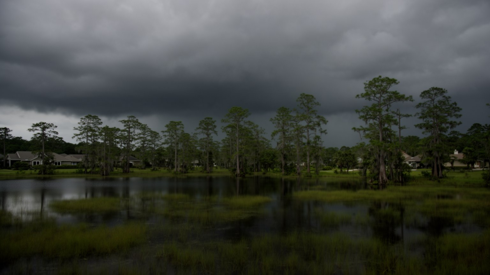
オーランドは海辺の都市ではないが、水の都市である。大小の湖、湿地、排水路、低い土地、砂質の地盤が市街地と郊外に入り込み、夏の午後には雷雨が短時間で道路や駐車場を濡らす。湿地は野鳥、爬虫類、植物の生息地であり、洪水を受け止め、水質を浄化し、暑さを和らげる自然のインフラでもある。ところが人口増加と開発は、湿地を住宅地、商業施設、道路へ変え、雨水の行き場を狭める。舗装面が増えるほど熱はたまり、豪雨時の流出は速くなり、低い地区や古い排水路に負担が集まる。観光地の人工的な水景やよく管理された植栽は美しいが、その外側には蚊、湿気、水質、藻類、野生動物との距離、地下水、灌漑の問題がある。夏の暑さは屋外労働者、園内スタッフ、建設労働者、配達員、バスを待つ人、高齢者に厳しい。気候変動で強い雨と熱が増えれば、観光の快適さも住民の健康も揺らぐ。オーランドを読むには、テーマパークの水辺演出と本物の湿地管理を別々に考えず、同じ水循環の中に置く必要がある。都市の成長が続くほど、保全された湿地、木陰、透水性のある土地、冷房を使えない人への支援が重要になる。自然は余白ではなく、内陸観光都市の安全装置である。湖畔の公園や歩道が涼しい避難場所として機能するかも、これからの生活の質を左右する。雨水を逃がす小さな緑地も、都市の防災を支える。
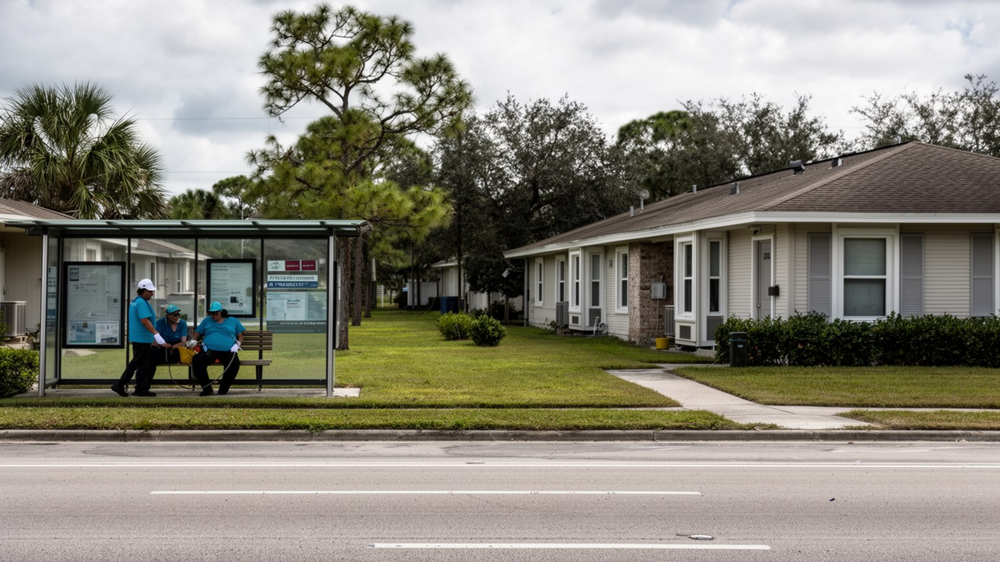
オーランドの生活で最も鋭い課題の一つは、観光経済の規模に比べて賃金と住まいの安定が追いつきにくいことである。人口増加、短期滞在需要、投資用住宅、建設費、保険料、金利の上昇が重なり、賃貸価格は多くの世帯に重い。テーマパークやホテルで働く人が職場の近くに住めず、遠い郊外から車で通う状況は珍しくない。交通費と時間が増えれば、低賃金の仕事ほど実質的な負担は大きくなる。古いアパートやモーテル滞在、過密な賃貸、親族との同居は、観光都市の華やかな広告には見えにくい生活の現実である。ホームレス支援、賃貸補助、手ごろな住宅の供給、公共交通、学校区、医療への近さは、都市の公平さを左右する。退職者やリモートワーカーの流入は地域の購買力を上げる一方、サービス労働者や若い家族には住み替えの圧力を強めることもある。住宅の問題は部屋の数だけではなく、冷房費、ハリケーン後の修繕、保険、車の保有、保育、子どもの転校まで含む。観光客に快適な都市が、働く人にも安定した都市でなければ、産業の持続性は弱くなる。オーランドの社会問題は、中心部の貧困だけでなく、郊外へ散らばる家計の不安として読む必要がある。住まいは観光地の裏側ではなく、都市経済そのものの基盤である。手ごろな住宅を交通、学校、医療の近くに置けるかが、次の成長の質を決める。
オーランドのエンタメ産業は、テーマパークの乗り物やショーだけに閉じていない。舞台装置、照明、音響、映像制作、アニメーション、ゲーム、シミュレーション、研修技術、展示会、スポーツイベント、会議運営が、観光の経験を支える技術として集まっている。大学や専門学校はデジタルメディア、舞台芸術、ホスピタリティ、ゲームデザインの人材を育て、空港や会議施設は企業イベントと国際展示を呼び込む。テーマパークで磨かれた行列管理、没入型空間、音響制御、安全管理、接客訓練は、医療訓練、軍事シミュレーション、企業研修、博物館展示にも応用される。華やかなショーの裏には、技術者、デザイナー、縫製、プログラマー、演者、清掃、倉庫、契約スタッフがいる。創造産業は若者に魅力的だが、案件ごとの雇用、夜間勤務、競争、著作権、賃金の不安定さも抱える。オーランドをエンタメの都市として読むなら、単に遊ぶ場所ではなく、体験を設計し、観客の動きを管理し、物語を商品化する専門知識の集積として見る必要がある。そこには芸術と工学、商業と安全、自由な想像と厳密な運営が同居する。都市の将来は、観光客数だけでなく、こうした技術を教育、医療、防災、地域文化へ広げられるかにもかかっている。地域の小さな劇場や学校の制作現場にも、その技能が流れ込んでいる。
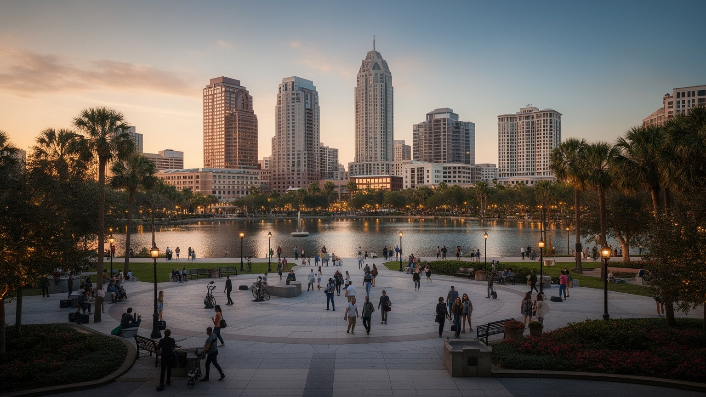
オーランドの中心市街地は、巨大テーマパークの陰に隠れがちだが、地域の行政、法律、文化、住宅、夜の経済が集まる別の都市の顔である。レイク・エオラ周辺の公園、裁判所、オフィス、劇場、スポーツ施設、バー、集合住宅、教会、歴史的な街区は、観光地とは違う生活と公共性を作る。ダウンタウンはコンパクトで歩ける部分を持つが、周辺道路の幅、駐車場、再開発用地、夜間の治安感覚、公共交通の弱さが、連続した街歩きを難しくする場所もある。若い専門職向けの高層住宅や飲食店は中心部を活性化させる一方、ホームレス支援、低所得者住宅、古い商店、公共空間の使い方をめぐる緊張も生む。市民にとっての中心市街地は、観光の記念写真よりも、役所へ行く、裁判所に出る、イベントに参加する、湖畔を散歩する、夜に働くといった実用の場所である。多くの来訪者がテーマパーク地区だけで滞在を終えるため、ダウンタウンの歴史や地域文化は見落とされやすい。だが都市としての成熟は、私有の娯楽空間だけでは測れない。誰でも座れる公園、図書館、劇場、手ごろな住まい、路上での安全、地域の商店があって初めて、オーランドは観光目的地を超えた市民の都市になる。中心部の課題は、成長の利益を公共空間へ戻せるかにある。湖畔の散歩道や劇場の夜は、市民が自分の都市を確かめる時間でもある。
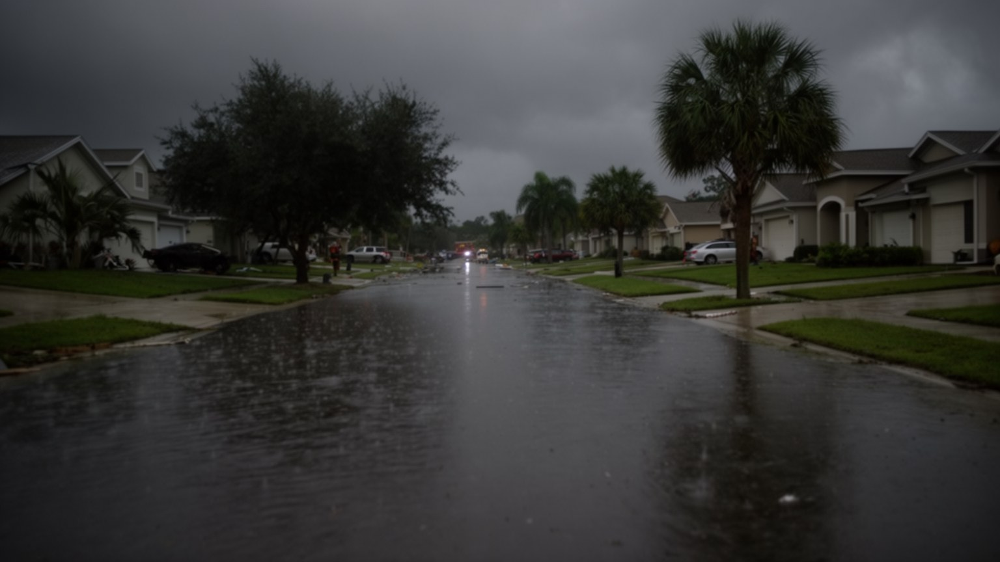
オーランドは内陸にあるため、海岸の高潮を直接受けにくいという利点があるが、災害リスクから自由ではない。ハリケーンは勢力を弱めながらも強風、大雨、停電、倒木、屋根被害、洪水をもたらし、観光施設、ホテル、空港、住宅地、病院、学校、配送網を止めることがある。午後の雷雨は日常的で、落雷、道路冠水、屋外作業の中断、園内イベントの停止を引き起こす。さらにフロリダでは保険料の上昇、建材価格、修繕業者不足、低所得世帯の避難費用が、災害後の回復力を大きく左右する。観光客は数日で帰れるが、住民は停電した家、休業で減った収入、子どもの学校、医療機器、ペット、車の修理を抱えて暮らしを戻さなければならない。大規模施設は独自の備えを持ちやすい一方、小さな賃貸住宅やモーテル滞在者、車を持たない人、高齢者、移民世帯には情報と移動の壁がある。災害対策は、避難所の数だけでなく、多言語情報、冷房、送迎、賃貸住宅の修繕、食料配布、労働者の休業補償を含む。オーランドの安全を読むには、晴れた観光日和だけでなく、風雨で空港が止まり、道路が冠水し、シフトが消える日の都市を想像する必要がある。内陸の安心は相対的なものであり、備えの公平さが都市の強さを決める。観光施設の復旧速度と住民住宅の復旧速度に差が出る時、その格差は特に見えやすい。
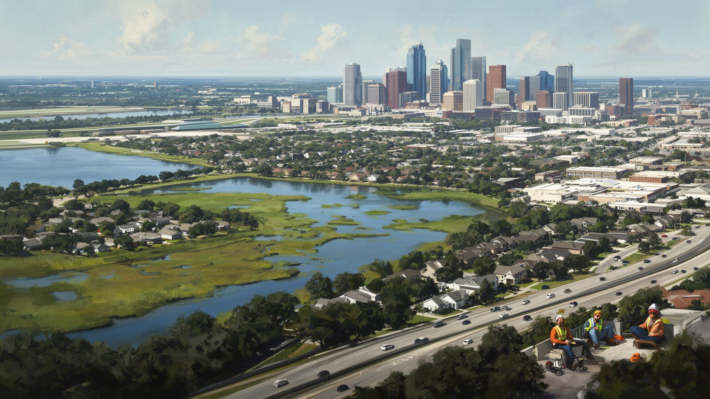
オーランドは、テーマパークの都市として世界中に記憶される。その印象は間違いではないが、それだけでは観光労働、ラテン系移住、空港、郊外住宅、湿地、住宅格差、中心市街地、災害リスクを見落とす。巨大な娯楽施設は、私有の完璧な都市空間のように見えるが、その外側には長い車通勤、アパート探し、学校、教会、保険料、保育、空港勤務、深夜清掃が広がる。家族旅行の楽しい記憶は、多くの住民にとってはシフト表、チップ、暑さ、交通費、家賃と同じ経済の中にある。オーランドを総合的に読むには、ディズニー周辺、インターナショナル・ドライブ、空港、レイク・エオラ、ウィンターパーク、キシミー、レイクノナ、郊外の湿地を同じ地図に置く必要がある。観光都市の強さは、訪問者を驚かせる演出だけでなく、働く人が健康に住み続け、災害時に守られ、自然の水循環を壊さずに成長できるかで測られる。オーランドの魅力は夢の消費にあるが、都市としての重要性は、その夢を支える労働、移住、技術、公共サービス、環境管理の複雑さにある。明るい休暇の都市を深く見るほど、現代のサービス経済が抱える希望と矛盾がはっきり見えてくる。旅行者の記憶と住民の生活条件を同じ平面で読むことが、この都市を理解する入口になる。そこにこそ、世界的観光地を都市として読む意味がある。